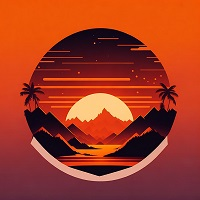

<div
  class="seccion-retroceder"
  style="width: 200px; display: flex; align-items: center"
>
  <ion-back-button defaultHref="/login" id="btn-volver-login"
    >Salir</ion-back-button
  >
</div>

<ion-content class="ion-padding">
  <div class="contenedor-head">
    
    <span class="slogan ion-margin-top"><b>Sunset</b></span>
  </div>
  <div
    class="datos ion-padding ion-margin-top"
    style="display: flex; flex-direction: column; gap: 10px"
  >
    <span><b>Versión: </b>1.0</span>
    <span><b>Fecha de lanzamiento: </b>28/07/2023</span>
    <span><b>Desarrollador: </b>Jean Carlos Ortiz Pezua</span>
    <span><b>Contacto: </b>jeancitouno@gmail.com</span>
  </div>
</ion-content>
<ion-footer
  class="ion-text-center ion-margin-bottom"
  style="background-color: transparent; border: none; box-shadow: none"
>
  <span style="color: rgb(126, 126, 126)">Rublad's ™</span>
</ion-footer>
